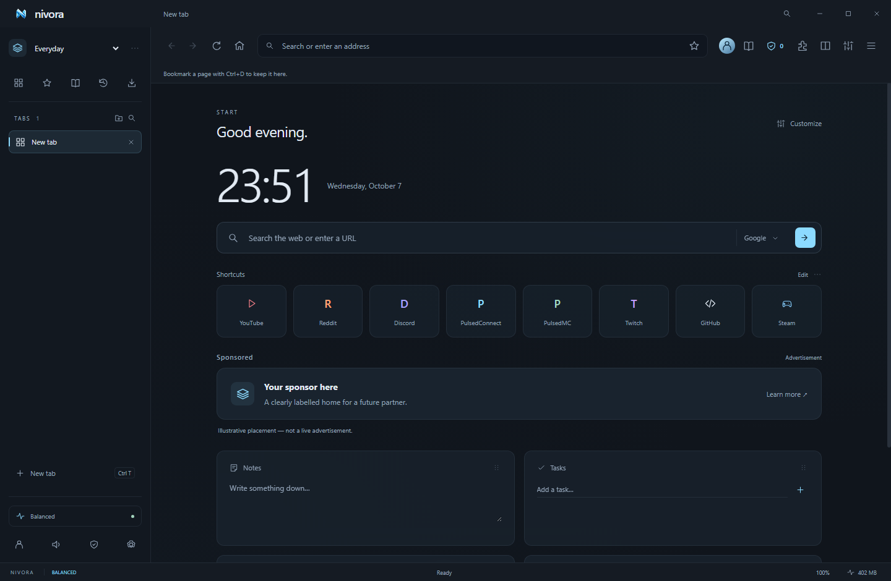
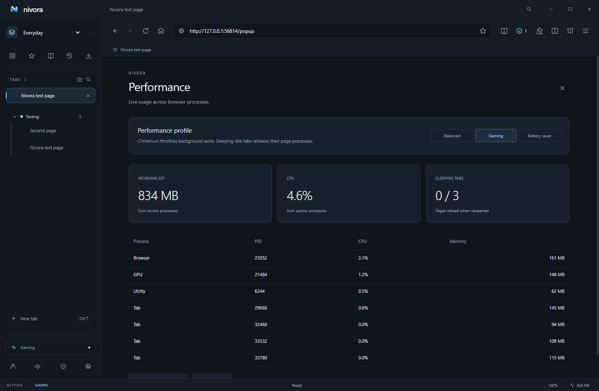
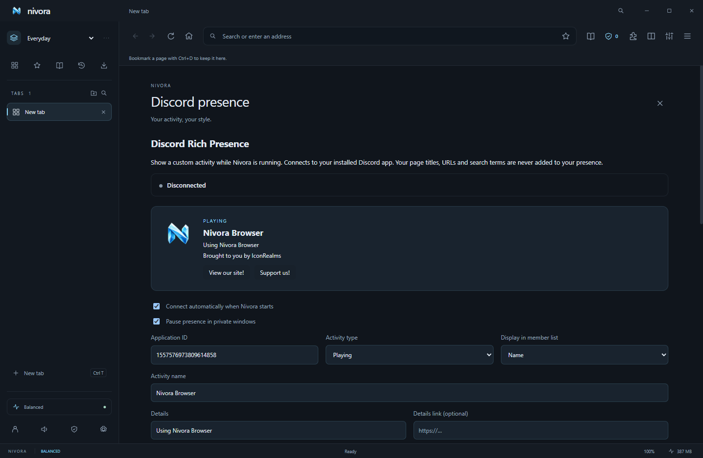

Ads out. Focus in.
EasyList and EasyPrivacy are built in. Block ad requests and trackers, hide page ads, and pause protection when a site needs it.
Meet the shieldRoom for your game. Space for everything else.
A browser with flexible tabs, built-in ad blocking and an icy blue interface you can make your own.
Windows x64 · No account needed to browse

EasyList and EasyPrivacy are built in. Block ad requests and trackers, hide page ads, and pause protection when a site needs it.
Meet the shieldGo vertical or horizontal. Put tabs in colored groups, split two pages, or preview a link with Glance before keeping it.
Find your flowYour accent, wallpaper, toolbar, widgets and shortcuts. Choose a 12- or 24-hour clock and set your own time zone.
Make your spaceReader mode gives articles a clean page. Save their text for offline reading, set your font, or have them read aloud.
Keep a good read
See the resources your browser actually uses.Switch to Gaming mode and Nivora releases idle tab pages after three minutes. Keep active, pinned and audible tabs awake, with real process stats whenever you need them.
 One browser. Your colors, your controls.
One browser. Your colors, your controls.Separate your tabs into Everyday, Gaming and Work spaces. Give your dashboard a useful clock, notes, tasks and custom widgets—then set keyboard shortcuts around the way you browse.

Your presence. Your details.Nivora connects to Discord on your desktop. Start with an IconRealms presence, then customize the text, artwork, timer and two links to make it yours.
Stay connected with PulsedConnect, or give your Minecraft community a place to call home with PulsedMC.
No. Browsing, bookmarks, themes, widgets and local backups work without an account. Cross-device sync needs a hosted sync service and your encryption passphrase.
Google restricts sign-in inside Electron browsers. Nivora offers to open Google login in your system browser. Continue with Google signs you into a saved local Nivora profile through your default browser. It does not sign Google websites into Nivora. Read the Google account guide.
No. Nivora is proprietary software by IconRealms. This website is public; the browser’s application repository is private.
Installed desktop builds check published GitHub Releases and download newer versions when automatic updates are enabled. A ready update installs on normal exit or an explicit restart. Portable builds use manual downloads.
Supported unpacked Chromium extensions can be loaded through the extension manager. Electron supports a subset of extension APIs, so Chrome Web Store installation and universal Chrome extension compatibility are unavailable.
Find the current availability of all five platforms on the download page. Windows downloads and Linux / universal Mac previews are available. The Mac preview is unsigned and uses manual updates. iOS and Android need separate native applications and are planned.
 BROUGHT TO YOU BY ICONREALMS
BROUGHT TO YOU BY ICONREALMSYour tabs. Your space. Your next session.
Get Nivora